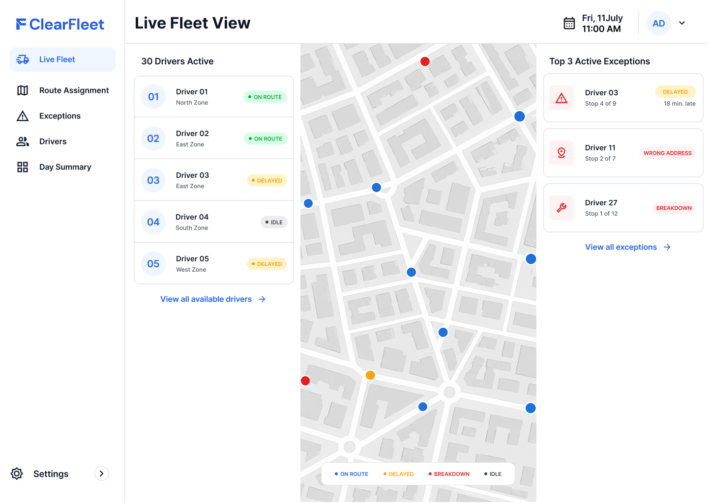
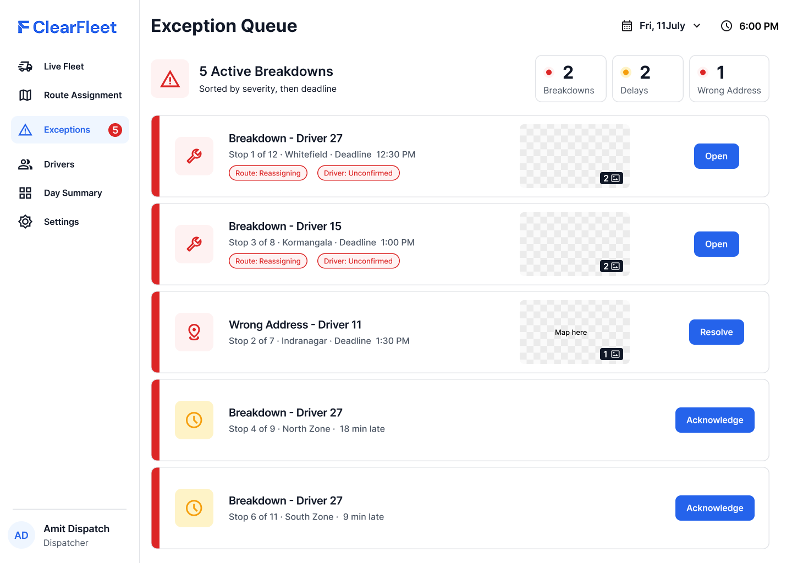
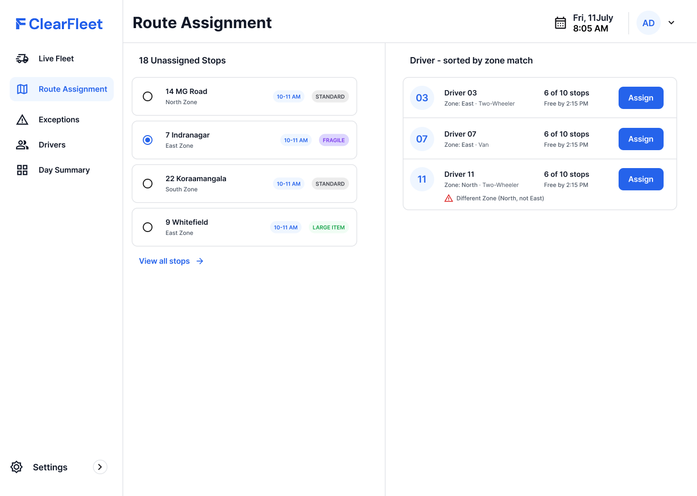
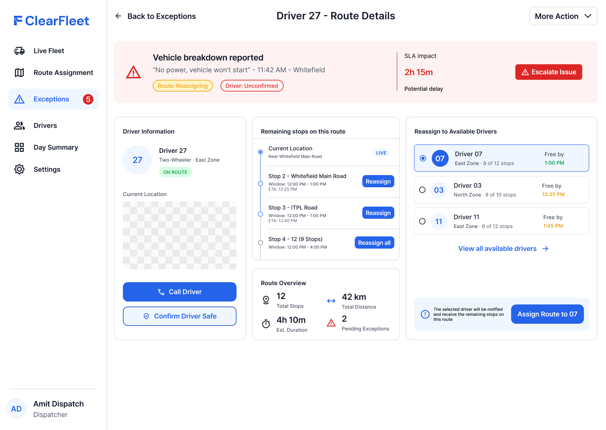
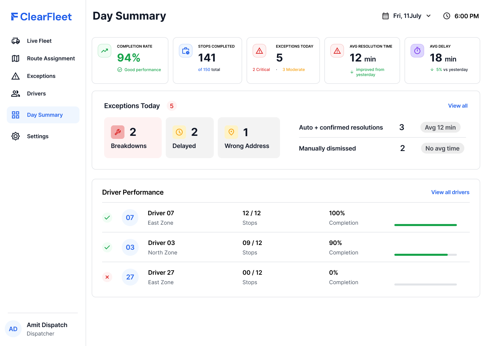
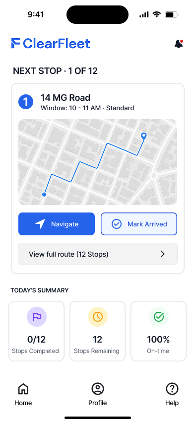
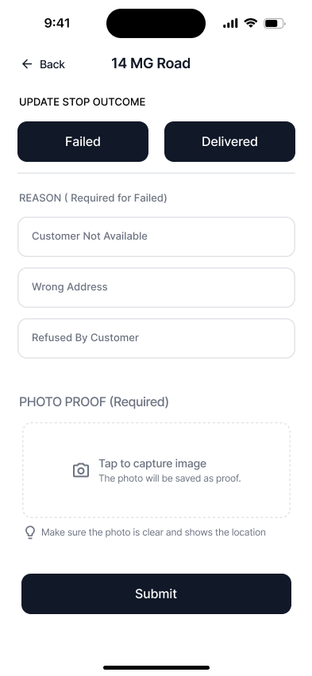
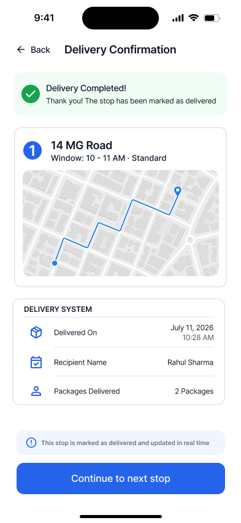
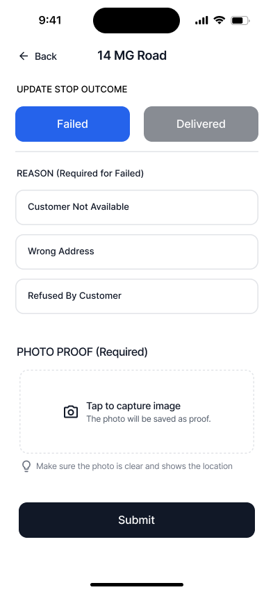
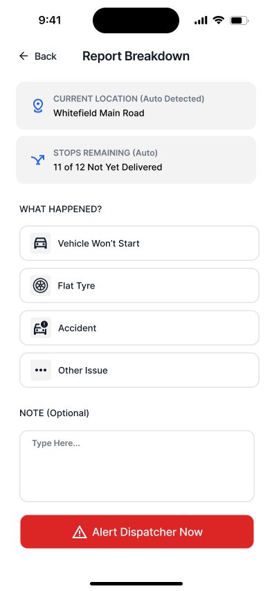

Clearfleet
I found a flaw in my own design that could have hurt someone, and that changed how I design now.
A tool that reduces the dispatcher's cognitive workload and turns an invisible problem into an actionable one.
Scroll
Project context
ClearFleet is a tool designed to reduce the cognitive workload of the dispatcher and turn the whole manual workload into a systematic process. It discovers an invisible problem and turns it into an actionable one.
Who pays and who uses it: The business or company purchases ClearFleet. A dispatcher operates it throughout the day to keep the fleet running.
The core problem: Dispatchers running a fleet of 20–100 vehicles have no way to see what is happening across the fleet in real time. So when something needs resolving, such as an exception, a reassignment or a driver's safety, they default to calling drivers directly, dozens of times a shift, just to find out and fix it.
Who it is for: I chose the fleet size at the very beginning of the project. I assumed a company needs a proper system once it reaches 20+ vehicles. This number is my own assumption and has not been checked against real fleet data.
Research: My research was secondary. It showed that fleet systems already exist, yet they still need manual intervention to close an exception or assign routes.
One informal conversation: I asked one delivery driver what happens when his vehicle breaks down. He said he reports it and someone may help, but he often has to arrange another driver or get help himself to finish the deliveries and deliver the vehicle.
This was one short conversation, not a study.
How I used an LLM: LLM assistance was used throughout the project. It helped with the secondary research. The first low-fi wireframes were generated by the LLM from the in-scope items. From there I developed the hi-fi screens, and the prototype was built with the LLM.
The phases of the projectFinal artifacts
Nine screens, the extra states built to make the breakdown flow work, and a live prototype of that one flow.
Browse the screens first for the visual design and information architecture. Then open the prototype to see the one flow that is fully alive.
Dispatcher web app

Live Fleet View
Every driver and vehicle on one map, with exceptions pulled to the top.

Exception Queue
One ranked list of what needs the dispatcher right now.

Route Assignment
Where stops are reassigned between drivers.

Driver / Route Detail
A single driver's stops and status.

Day Summary
What happened across the fleet today.
Driver iOS app
The driver side of the same flow, from the home screen to reporting a breakdown.

Driver Home
Today's route and the next stop.

Update Stop Outcome
Mark a stop delivered or failed.

Delivery confirmation
The driver confirms the hand-off.

Failed state
The same screen once a stop is marked failed.

Report Breakdown
The driver reports the issue
States built beyond those screens
To make the breakdown flow work end to end I built extra states that exist in the prototype: the Exception Queue's unconfirmed, escalating and empty states, the confirm sheet, the 60-second pending screen, the dispatcher-notified and case-closed screens, the failed-stop confirmation, and the reassignment toast with the full route list.
These do not exist as static Figma frames. You will see them in the prototype below.
One flow, fully alive
It covers the breakdown exception end to end: report, escalate, reassign, confirm safety, resolve. It does not cover all three exception types shallowly.
It also includes edge cases that never exist as static screens: no driver available, a false alarm, and a deprioritized wrong address.
Open the prototypeBest on a desktop. Opens in a new tab
- 1
Switch to the driver phone and report a breakdown. Pick a reason.
- 2
Switch back to the dispatcher. Watch it appear in the Exception Queue.
- 3
Reassign the remaining stops. Check the zone-mismatch line in the picker.
- 4
Notice the case does not close yet. Confirm the driver is safe.
- 5
Both confirmations true: the case resolves.
Key design moments
Two moments show how I think: one flaw I caught in my own design, and one choice I made against the obvious option.
Closing a breakdown case without checking on the driver
In the early design of the exception, we noticed a flaw where reassigning the routes alone was enough to close the whole case, leaving the driver stranded because the system never asked about their safety. To resolve this issue, I came up with dual split states where the dispatcher now has to confirm both separately, and both have to be true before the case gets resolved.
The zone-mismatch warning
When a dispatcher reassigns a stop to a driver who is in the opposite zone, the obvious fix is a warning pop-up, but the system doesn't know the ground reality the way the dispatcher and the driver do. A blocking pop-up assumes it's always wrong and would stop the dispatcher every time, and a dispatcher doing it 10+ times in a single shift would hit that interruption over and over, until they stop reading it and click it through. So instead of using a pop-up as the solution, this mismatch shows as a small warning line under the driver's name in the picker, visible before they take the action, but not blocking the decision. The dispatcher still sees it every time, they just get to use it instead of dismiss it.
Blocking pop-up. Interrupts every time, gets clicked through.
Warning line under the driver's name. Visible before the action, never blocks.
Impact
None of ClearFleet's impact is measured.
These are the three targets the design was built toward, carried over from the original concept.
They are design targets, not results. This is a passion project with no live users and no deployment, so none of these numbers has been tested against real dispatchers or real fleets. They are the assumptions the design was built toward, not evidence of what it achieves.
Reflections
First ideas can have flaws
One of the major reflections from this project is that first ideas can have flaws. While I was testing one screen, a flaw surfaced after someone asked why safety was confirmed after reassigning. Since then I have made a habit of asking the worst-case question, because of that experience.